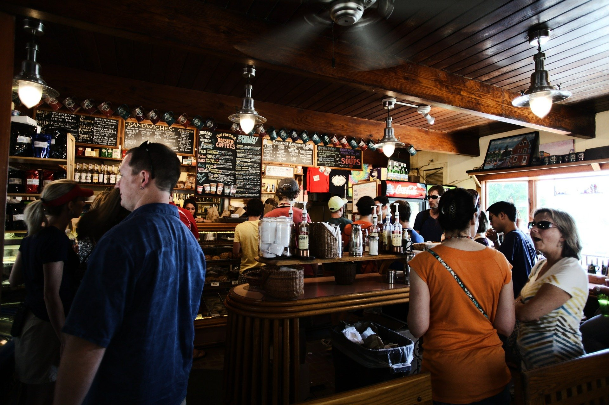

NUESTRA
HISTORIA

En un pequeño rincón de otro negocio mexicano de Corona
nació hace 19 años el restaurante Sabor Latino.
Con el tiempo se convirtió en el lugar insignia
de la gastronomía ecuatoriana y latina, así como centro
cultural y de eventos musicales en La Candelaria .
Sabor Latino dispone de dos salones, uno para los comensales,
con capacidad para 250 personas, incluida la terraza, y una
planta baja para eventos y celebraciones, donde caben 300 personas.
La unidad familiar y el esfuerzo de muchos años convirtieron
el pequeño rincón de menos de 10 metros en un centro gastronómico
con sabor y buen gusto. El comienzo fue duro para todos. Juan trabajó
durante seis años en restaurantes de Manhattan. “Hacía de todo.
Comencé lavando platos e hice de todo”, dijo Juan en la terraza
del restaurante.
Sus hermanos hacían lo mismo, trabajando duro y ahorrando.
Desde que nacieron en Deleg (Cañar del Ecuador), en la Sierra,
siempre se apoyaron y permanecieron unidos. Hoy, varias décadas
después, Rosa, la mayor, maneja la sala, Jesús se encarga de la
barra y Juan estaba al frente de la cocina hasta hace 10 años,
pues tuvo que dedicarse a los eventos y los catering para fiestas.